在人类社会的发展进程中，诞生了许多数。其中包括广为人知的数和只有在高等数学中才能见到的数。那么大家对数究竟了解多少呢？接下来，让我们通过回顾数的历史，来了解一下人类的发展史。
最古老的数中有：
1，2，3，4，5，…
这些都是自然数，主要用来计量事物的件数。这些数自远古时期就开始被人类使用，是最能让我们自然而然地联想到的数，所以被称为“自然数 ”。
如果数的用途只是统计事物的数量，那么光自然数就足够了。但是，随着人类文明的发展，方方面面都需要使用数来表示。例如，A从B那里借了一些钱，应该用什么数来表示呢？对于这种赤字的情况，我们只需在数前面加上负号“-”，就能很好地表示。事实上，在7世纪左右的印度，为了表示欠款，人们已经开始使用负数了。公元前1世纪左右，中国的古书中就出现了负数。下面我们将负数和正数进行排序，具体如下：
…，-3，-2，-1，□，1，2，3，…
上述数列是否有不全的地方？为什么中间会有一个“□”，是某个数字被去掉了吗？答案是：“0”。
随着人口数量的剧增，社会逐渐有了管理大规模业务和人口数据的需求，处理“大数”的机会也多了起来。在处理位数众多的大数时，往往会出现“没有数字”的空位，所以如何表示这些空位成了问题。在古巴比伦，通常用空格来表示空位。例如，用“1 2”来表示“102”。但是，空格的使用方式和大小因人而异，所以很容易造成麻烦。以“1 2”为例，如果让那些习惯将空格留得小一点的人来做记录，就很容易与“12”相混淆。
在无数次发生错误、查找错误、修改错误的过程中，各地文明也在进一步发展，于是出现了大量表示空位的符号，“0”这个数字就是在这时出现的。古巴比伦用刻在石板上的斜体楔形文字表示0；玛雅文明用贝壳的图形来表示0；印加帝国则用绳结来表示0。但是，这个时期的0并没有被当成数字，也就是说它不能与其他数字一同进行加减乘除运算，只是一个表示“这里是空位”的符号 。
据说，世界上最早将0作为数字的是古印度数学家。公元7世纪左右，古印度数学家婆罗摩笈多认为0就是一个数字，是可以与其他数进行加减乘除运算的。这样，在将0确定为数字后，不光正数和负数，就连“无的状态”（零状态）也可以用数字来表示了。这一革命性的发明，在很长一段时间后才由印度传向了全世界。
但是欧洲各国似乎一直很难接受“0”这个数字。直到现在，钟表表面上书写的仍然是罗马数字“Ⅰ，Ⅱ，Ⅲ，Ⅳ，Ⅴ，…”，而在罗马数字中，是不存在与0对应的数字的。总而言之，在早期的欧洲人的世界观中貌似没有0的存在。之所以这么说，是因为古希腊哲学家亚里士多德一直否认“无”这个状态的存在，他的这一思想与中世纪欧洲基督教教义相吻合，即认为“神奇的数是由上帝创造的，而上帝创造的数中根本没有‘0’”，用“0”来表示“无”这个状态，是在玷污“神圣的上帝”。
到了现代，世界各国都承认了0的存在。我们上面提到的所有数，统称为“整数”，而整数又分为正整数、负整数和0，如图2-4所示。
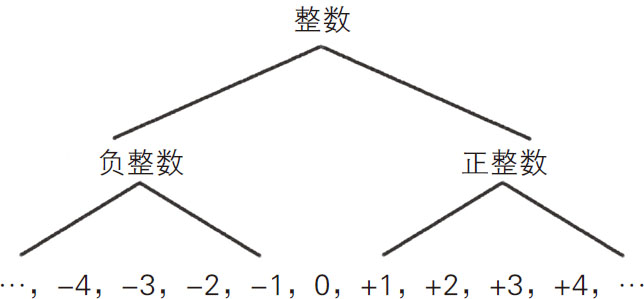
图2-4 整数的构成
在表示事物个数和金钱面额的时候，无论是何种状态，都可以用整数来表示。但是，这样仍然不能满足社会发展的需求。例如，重量怎么表示呢？如果物体很轻，势必需要用比1更小的数来表示。这个时候能用到的，自然是分数与小数。古巴比伦人就是依据六十进制来使用小数的；在中国、印度等亚洲国家的文献中，很早就有使用小数的记载；欧洲在很长一段时间内都只使用分数，直到17世纪才开始使用小数。
至此，1，2，3，…这些整数之间有了小数和分数，变得连续了起来，它们统称为“实数”，如图2-5所示。
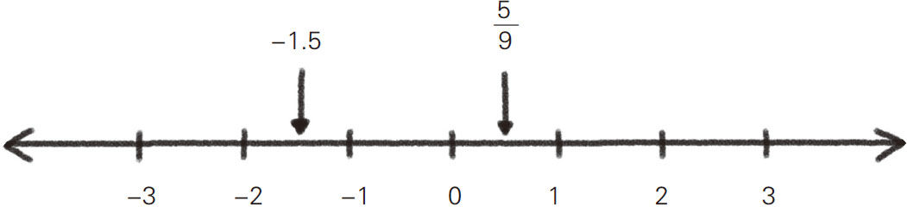
图2-5 实数的构成
然而，实数中有一些数只能用小数表示，而不能用分数表示。我们将实数中能用分数表示的数称为“有理数”，不能用分数表示的数称为“无理数” 。例如，圆周率“π”就被证明是一个不能用分数来表示的无理数。除此之外，2的平方根“
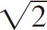
”、3的平方根“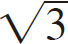
”、自然常数“e”等都是无理数。无理数的概念我们将在下一节中详细说明。数字的世界一步步地扩展下去，实在令人称奇。接下来，我们要讲一讲古灵精怪的数字“i”。我们知道，“正正得正，负负得正”，任意实数自乘后的结果都不可能是负数。但是，两个i相乘后的结果等于-1！ 用数学符号来表示就是“
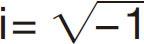
”。“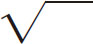
”表示开平方 ，如“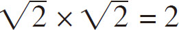
”“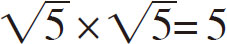
”。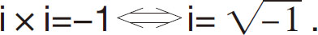
提出这个不可思议的数——i的是16世纪的欧洲人。它的发现要归功于意大利数学家卡尔达诺 。卡尔达诺在1545年出版的《大术》一书中，发表了一元三次方程“ax 3 ＋bx 2 ＋cx ＋d ＝0”的求解公式。
卡尔达诺在求解这个一元三次方程的过程中发现，无论如何都会出现一个自乘后结果为-1的数，也就是
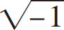
。因此他才不得不承认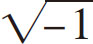
的存在，并将它写为“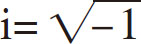
”。其中，i表示“想象中的数字”，是“imaginary number”的第一个词的首字母，引申义为“这是一个并非真实存在，却不得不引入的数”。后来，人们就将i定义为“虚数单位 ”了，而“虚”这个汉字本身就含有“实际上不存在”的意思。这样的解释是不是很容易理解？接下来我们看一个具体的示例。这个示例是16世纪的数学家邦贝利在他的著作中提到过的。首先，我们来求下面这个一元三次方程的解：
x 3 -15x -4＝0.
这个方程的一个解为x ＝4，将x ＝4代入，得到：
43 -15×4-4＝64-60-4＝0.
很明显，这个答案是正确的。
第六感强的人可能一眼就能看出x ＝4这个答案。但是，仅凭直觉求一元三次方程的解并不是一件好事。例如，这个方程除了x ＝4这个解外，还有
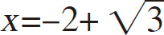
和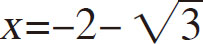
两个解，想用直觉将这三个解全都看出来，显然是不可能的。但是，我们如果使用卡尔达诺公式，就能轻松得到这个方程全部的解。我们首先用卡尔达诺公式来求第一个解，也就是x ＝4。根据卡尔达诺公式：x 3 -□x -◇＝0（□和◇代表任意实数），
其中一个解为：
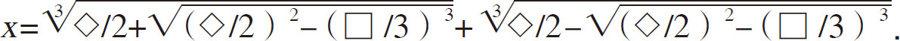
其中，
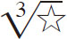
表示自乘3次后为☆的数，也就是将☆开三次方的意思。例如，2自乘3次后等于8，8开三次方后等于2，即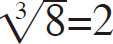
。上例中的□＝15和◇＝4代入方程后得到：
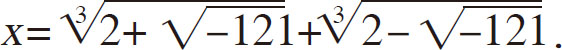
上式中出现了“ ”，将
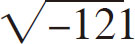
自乘后的结果为-121。另外，因为“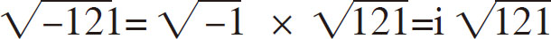
”，所以上式可以写为：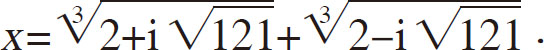
如此一来，用公式求这个方程的解，势必出现虚数单位i。是不是觉得有点难懂？别担心，随着计算过程的推进，不但方程式中的
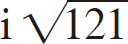
会消失，还能得出x ＝4的结果。只是在得出最终结果x ＝4的过程中，无法避免含有i的计算。也就是说，在一元三次方程的求解过程中，一定会出现虚数单位i 。其实，发现卡尔达诺公式的并非卡尔达诺本人，据说这个公式是意大利数学家尼科洛·塔尔塔利亚发现的。卡尔达诺在听说了塔尔塔利亚发现了一元三次方程的求解公式后，不停地纠缠塔尔塔利亚将这个公式告知自己。无可奈何的塔尔塔利亚在对方同意“绝对不外传”后，悄悄地将这个公式告诉了卡尔达诺，而卡尔达诺转身就把这个求解公式发表在了自己的著作中。虽然塔尔塔利亚非常愤怒，但已无济于事。所以直到现在，我们都将一元三次方程的求解公式称为“卡尔达诺公式”。
i与其他普通的数一样，可以进行加法或乘法运算。准确地说，是我们必须将i定义为和普通数一样可以参与运算的数，否则一元三次方程就不能顺利求解，所以这一定义一直沿用至今。
在多倍i的前面加上一个实数，就能得到诸如“4＋4i”的“○＋□i”形式，我们称这种形式的数为“复数” 。复数可以用平面上的点来表示。在坐标系中，横轴表示实数部分，纵轴表示虚数部分。也就是说，复数是可以用坐标系来表示的值，而且不仅要有表示实数部分的直线，还要有表示虚数部分的直线，否则复数就无法表示出来，如图2-6所示。
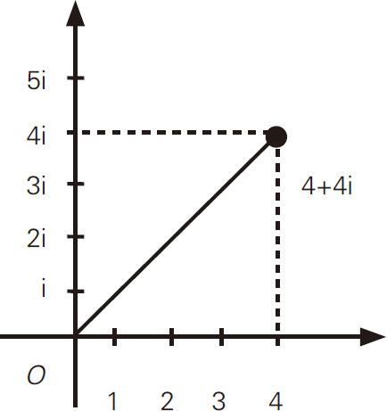
图2-6 4＋4i的表示方法
起初，很多数学家都不认同复数的存在，纷纷质疑：“怎么可能有这么奇怪的数！”后来，他们了解了复数在数学和物理领域中发挥的重要作用后，便慢慢地接受了。
量子力学是现代物理学基础，它认为物质波是以复数的形式表现的 。物质具有波的性质，是通过一个叫“双缝实验 ”的实验得以证实的，如图2-7所示。该实验中用到了构成物质的基本粒子之一——电子。首先，准备一个开了两条细缝的挡板，然后向这块板发射电子。发射的电子会通过缝隙射到位于板后方的玻璃屏上，被电子射到的部分会变成白色。在多次发射电子后，不可思议的事情发生了，被电子射中的部分和没被电子射中的部分在玻璃屏上形成一系列明、暗交替的条纹，这就是非常著名的双缝干涉条纹，如图2-8所示（a、b、c、d表示时间的先后顺序）。双缝干涉条纹是由物质（电子）波从两条缝隙射出后，经过互相干涉形成的。科学研究非常重视实验，如果实验结果明确显示了物质具有波的性质，那么就算在脑海中很难想象，也要承认物质波的存在。
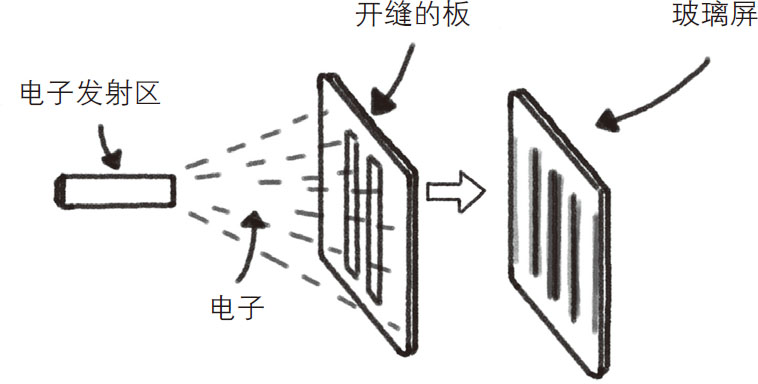
图2-7 双缝实验装置
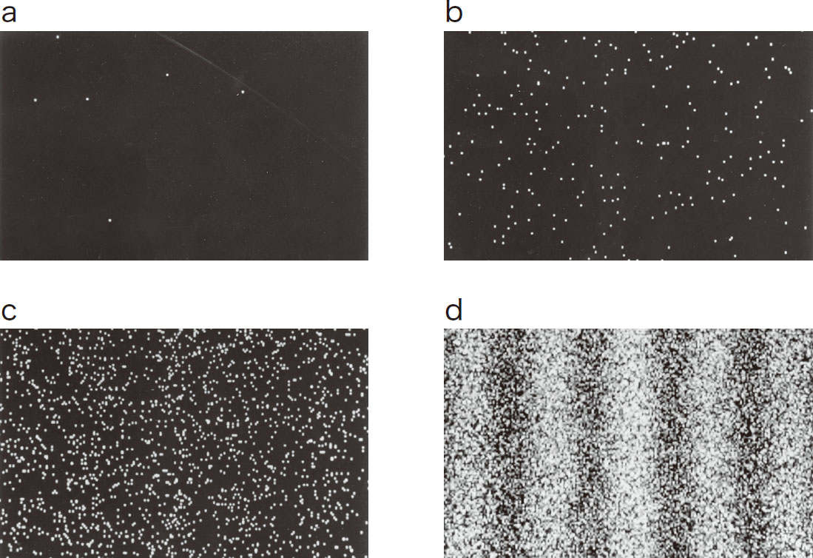
图2-8 双缝干涉条纹
（图片来源：日立制作所）
那么，为什么用复数来表示波呢？其实这是为了解释自然现象而构造的理论。如果可以认定物质波是复数结构的，就可以正确地预测许多实验结果，并且手机通信、微波炉的使用过程中涉及的电磁场的性质，也能用数学的方式加以说明。这方面的知识非常专业，在此不做赘述。值得一提的是，当物质波是复数结构的时候，就具有数学上的“U（1）对称性” 。
如果用数学的方式进行计算，我们就会发现U（1）对称性会产生电磁场。提起电磁场的概念，很多人会觉得有些难。其实手机、广播在通信过程中使用的电波就是电磁场的一种，可见电磁场在文明社会拥有举足轻重的地位。如果物质波不是复数结构，那么电磁场就不存在了，我们也就无法使用手机、广播了。
虽然我们很难想象复数结构的波是什么样子的，但如果思考后的结果与实验结果一致，就可以认定物质波是复数结构的。复数是一个很抽象的概念，但它在日常生活中十分常见。各种类型数的关系如图2-9所示。
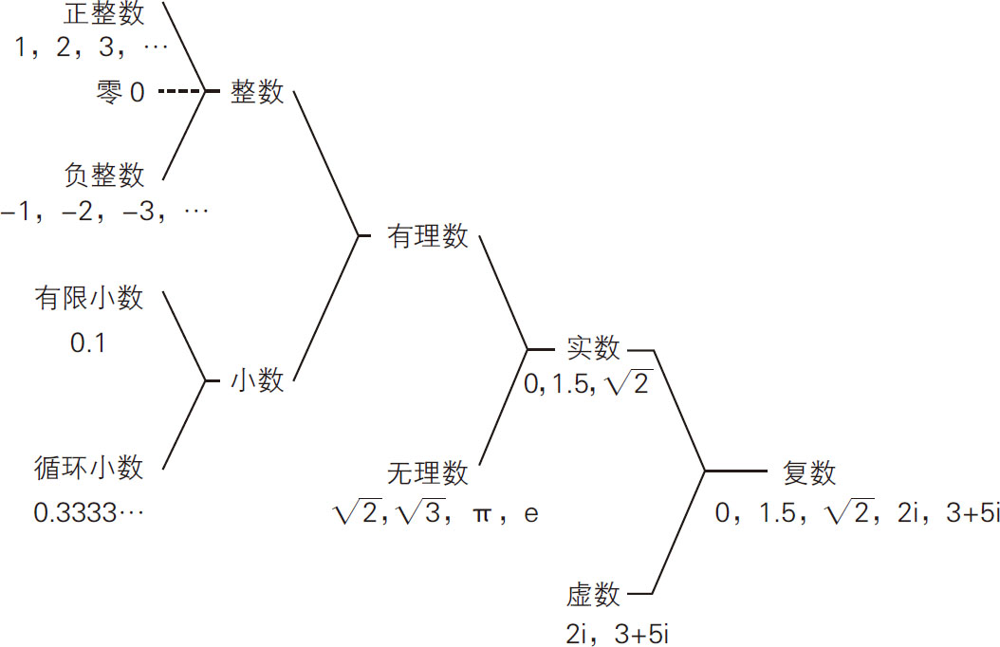
图2-9 各种类型数的关系
近年来，人们对于复数的研究不断深入，四元数、八元数等理论体系逐渐被提了出来。但是这些十分复杂的数是不可能用直线或平面来表示的，我们将这些数统称为“超复数”。通常只有专攻数学的人士才会接触到这些数。
人类就是这样冥思苦想，一步步地拓展了数的世界的。今后数的世界会继续拓展下去吗？还是到此为止了？大家是如何看待这个问题的呢？